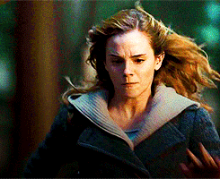
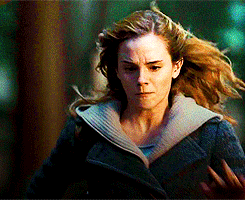

La historia comienza con la celebración del mundo mágico. Durante muchos años, había sido aterrorizado por el malvado mago Lord Voldemort. La noche del 31 de octubre, mató a Lily y James Potter. Sin embargo, cuando intenta matar a su hijo de 1 año, Harry, la maldición asesina Avada Kedavra se vuelve sobre sí mismo. El cuerpo de Voldemort resulta destruido, pero él sobrevive: no está muerto ni C:\Users\saulemmanuel\Pictures\vivo. Por su parte, a Harry solo le queda una cicatriz con forma de rayo en la frente que es el único remanente físico de la maldición de Voldemort. Harry es el único sobreviviente de la maldición asesina, y a raíz de la misteriosa derrota de Voldemort, el mundo mágico empieza a llamarlo como «el niño que sobrevivió.
El 1 de noviembre, Rubeus Hagrid, un semi-gigante, deja a Harry con los únicos parientes que le quedan, los crueles Dursley. Estos son su tío Vernon, su tía Petunia y Dudley, su primo malcriado. Ellos intentarán en vano esconder su herencia mágica (por ejemplo, al decirle que sus padres murieron en un accidente de tráfico, o castigándolo severamente después de cualquier comportamiento extraño). Sin embargo, la víspera de su undécimo cumpleaños, Harry tiene su primer contacto con el mundo mágico cuando recibe cartas del Colegio Hogwarts de Magia y Hechicería, las cuales eran entregadas por lechuzas, aunque su tío impide que pueda leerlas. Ya en su cumpleaños, Hagrid aparece y le dice a Harry que existe un mundo mágico y otro «muggle» , puesto que él es un mago, ha sido invitado a asistir al colegio.